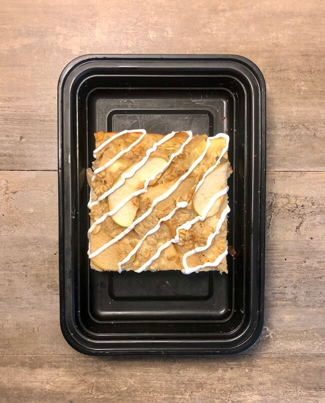

Odin Recipes
OVEN BAKED EGG WHITE BITES (STARBUCKS COPYCAT)
Description
Easy to make, healthy, meal-prep style breakfast that keeps well in the refrigerator. Combines vegatables and egg-whites into bite sized portions perfect for reheating. An excellent choice for a quick breakfast any day of the week. Alternatively, remove all ingredients from the recipe apart from the egg whites. You'll be left with a pure protein breakfast that leaves your whole home smelling like farts and your significant other wondering if you're secretly a psychopath.
Ingredients
- 9 egg-whites
- 1/2 red bell pepper
- 3 ounces cottage cheese
- 1 ounce spinach
- 1 teastpoon black pepper
- 1/2 teaspoon salt
Steps
- Preheat the oven to 360f/180c.
- Add all the ingredients to a jug or bowl and whisk together to combine.
- Pour into a muffin or cupcake tin, leaving a little room for them to expand.
- Bake in the oven for around 25 to 30 minutes until the tops start to brown and they are cooked through.
- Let cool slightly before removing from the tin.
APPLE PIE BAKED OATMEAL

Description
An incredibly dense, dry, and grainy oatmeal bake saved by the occassional bite of fried honeycrisp apple. Like all truly great A.M. meals, this bake can be treated as either a breakfast or dessert. To improve the texture of the finished product, replace 2 cups of oats with 2 cups of Kodiak Cakes Flapjack & Waffle Mix.
Ingredients
- 3 cups (240 g) old fashioned oats
- 2 scoops (60 g) vanilla protein powder
- 1 tsp (4 g) baking powder
- 4 medium (600 g) apples peeled
- ¼ cup (48 g) brown sugar
- 1 tbsp (8 g) cinnamon
- 2 tbsp (28 g) butter
- 2 eggs
- 2 cups (480 g) skim milk
- 5 tbsp (60 g) vanilla Greek yogurt optional for frosting
Steps
- Wash and peel the apples. Cut them in half and remove the cores. Cut them into thin slices.
- Heat a large skillet over medium heat. Add 1 tbsp of butter and then add the apples.
- Sprinkle the cinnamon and brown sugar over the top. Cook until the sugar has reduced and the apples have become soft.
- Preheat your oven to 375°F.
- In a large bowl, mix together the oats, protein powder, and baking powder.
- In a separate bowl, whisk together the eggs, milk, and 1 tbsp of melted butter. Pour over the top of the apples and oats and mix.
- Spray a 13"x9" pan with oil and add the oat mixture and apples.
- Bake for 30-35 minutes.
THREE INGREDIENT PEANUT BUTTER COOKIES
Description
Objectively THE most delicious cookie to ever exist in this world. Pair with equal parts cool milk and warm nostalgia.
Ingredients
- 1 cup peanut butter
- 1 cup white sugar
- 1 egg
Steps
- Preheat oven to 350 degrees F (175 degrees C). Line baking sheets with parchment paper.
- Combine the peanut butter, white sugar and egg. Mix until smooth.
- Drop spoonfuls of dough onto the prepared baking sheet. Bake at 350 degrees F (175 degrees C) for 6 to 8 minutes. Do not overbake! These cookies are best when they are still soft and just barely brown on the bottoms.